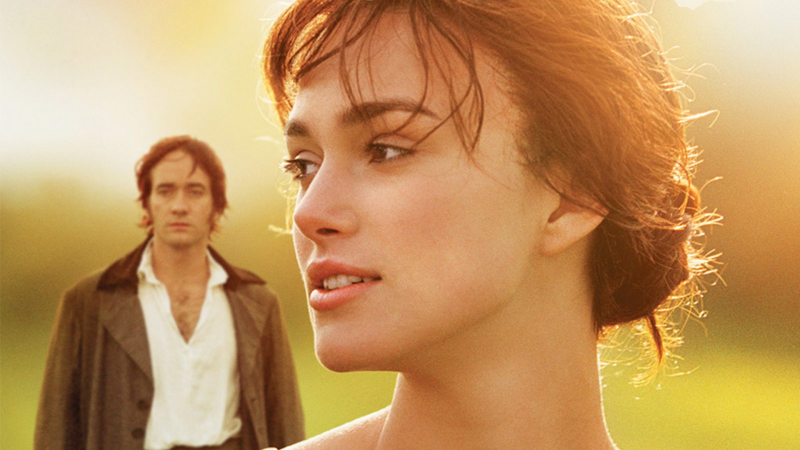
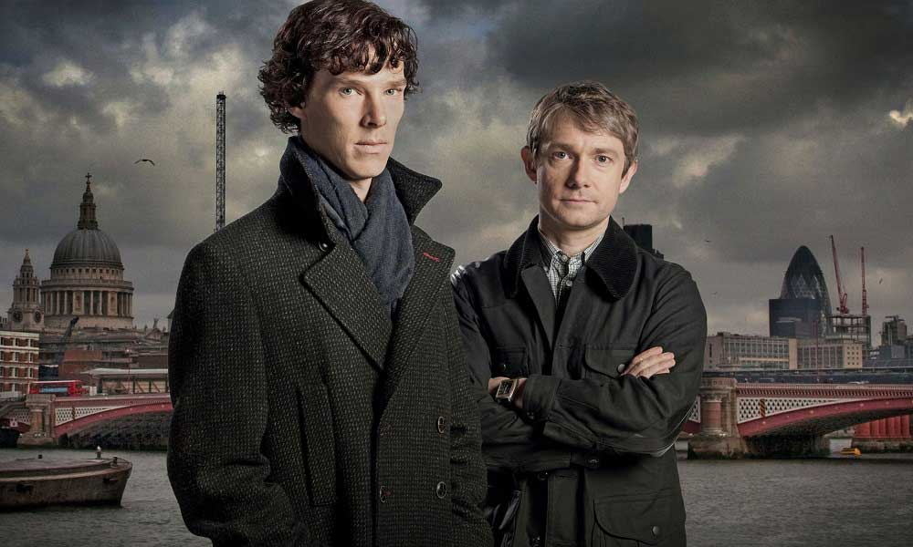

Godfather şu dünya üzerinde en çok beğenerek film serisidir. Gerekse Marlon Brando gerekse Al Pacino oyunculukları ile filmi olağanüstü bir seviyeye taşıdılar. "I don't apologize to take care of my family" ya da "I'm gonna make him an offer he can't refuse." gibi replikleriyle kalbime kazınan bu filmi tekrar izlemeye kıyamıyorum desem yeridir.
Serinin en sevdiğim filmi ise kesinlikle ilk filmi çünkü en sevdiğim karakterler yani Sonny ve Vito Corleone orada. İkinci filmi her ne kadar sanatsal olarak kendi alanında ilklere imza atmış olsa da başlangıç filmi bir şaheserdir.

Gurur ve Önyargı'nın ilk kitabını okuyup aşık olmuştum. Sonrasında filmini izledim ve kendimi bir peri masalında gibi hissettim. Mekanlarıyla, hikayesini anlattığı aşkla büyülendim adeta. Normalde romantizm tutkunu olmasam da böyle bir aşk karşısında duygulanmadan edemedim. En sevdiğim sahne de ya filmin sonundaki ya da dans ettikleri zaman olabilir.
Benedict Cumberbatch'ın müthiş oyunculuğuyla başrol olduğu Sherlock Holmes dizisi favori dizim olabilir. Her ne kadar kitaplarını tam yansıtmış olmasa da 1800'lü yılları 2000'lere uyarlamada oldukça başarılı bir iş başarmışlar. İzlerken hem güldüğüm hem merak ettiğim hem de hayran kaldığım bir dizi olduğu için bunu yazmak istedim. Yine de söylemeliyim ki Moriarty karakterinin bu kadar yakışıklı olmasını beklemiyordum!
